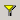
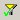
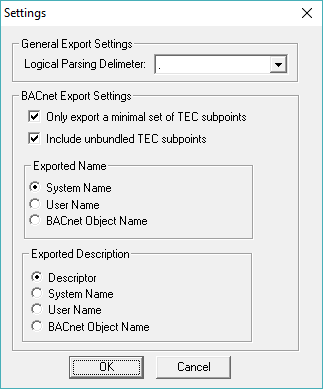

Exporting the Database
In the process of integrating your APOGEE database with Desigo CC, you will export one or more types of data. This topic discusses how to do that.
Requirements
- Commissioning Tool (CT) Revision 3.12 and higher
Export Utility
The Desigo CC Export Utility is part of the Commissioning Tool and is used to convert an existing APOGEE database to a format that can be imported into Desigo CC. The APOGEE database refers to BACnet field panels, P1 Terminal Equipment Controllers (TECs), P2 devices, BACnet MS/TP TECs, and graphics.
Features
With the Desigo CC Export Utility you can:
- View hierarchical representations of the existing database objects and their properties
- Filter ALNs and devices you want to export
- Generate an export file or set of files that contain objects that you selected, which can then be imported into a Desigo CC using the method appropriate to the type of data.
File Structure
BACnet panel data files contain the name, ID, and description of properties that are exported from the database in a SiB-X file. The file also contains physical and logical hierarchies/views of the objects. Upon export, one XML file is created per BLN. Each file resides in the root of the export directory.
NOTE: So that the panel name used during import and discovery is the same, device object names are mapped to short names in the SiB-X file. Keep in mind that if you are re-importing an older SiB-X file, the panel node in System Browser will be deleted and then re-added with the object name.
Main Window
When you select the Desigo CC Export Utility from the Commissioning Tool Main Menu, the utility’s main window displays. This window is divided into left and right panes.
From the main window, you can access the following:
- Menu Commands
- Filter BLNs dialog box
- Filter Graphics dialog box (applies only for migrating projects and not for BACnet projects)
- Settings dialog box
The Desigo CC Export Utility reads the database and displays all its devices and objects in hierarchies in the left pane.
The right pane displays the properties for any BACnet object selected in the Physical hierarchy (no properties are displayed for selected objects in the Logical hierarchy). The visual layout of these objects is based on the APOGEE point naming convention and corresponding function of the object. If the point naming convention was not followed, the objects display in the Local_IO folder.
The displayed views show what the utility will export. You can filter this view (and therefore what is exported) by clicking the Edit menu and selecting Filter BLNs or Filter Graphics. The utility also displays an object and folder count in the lower-left corner of the window.
Additionally, you can specify object name and description conventions by opening the Settings dialog box from the Edit menu.
Menu Commands
File
Command | Description |
Export Database | Generates one or more XML files containing the objects displayed in the left pane (hierarchies view). |
Generate Licensing Document | Creates an ApogeeLicenseInformation.pdf file showing a database summary for licensing. |
Exit | Closes the Export Utility. |
Edit
Command | Description |
Filter BLNs | Opens the Filter BLNs dialog box where you can filter the view displayed in the left pane of the window. The displayed view shows what the utility will export. You can also open this dialog box by clicking the Filter toolbar button:  Indicates the view is unfiltered. Indicates the view is filtered. |
Filter Graphics | Opens the Filter Graphics dialog box, where you can filter the view displayed in the left pane of the window. The displayed view shows what the utility will export. Indicates the view is unfiltered. Indicates the view is filtered. |
Settings | Opens the Settings dialog box, where you can specify export settings. |
View
Command | Description |
Toolbar | Displays or hides the toolbar. |
Status Bar | Displays or hides the status bar. |
Refresh | Refreshes the hierarchical view. |
Help
Command | Description |
Help Topics | Opens the main help contents window. |
About Desigo CC Export Utility | Displays the version number of the Export Utility and the copyright notice. |
Complete the following procedures in order:
Start the Export Utility
Perform the following steps when creating a new BACnet project or integrating an APOGEE Insight system.
- For a new BACnet project, APOGEE Insight or Commissioning Tool Version 3.12 or later is installed.
- For an APOGEE Insight integration, APOGEE Insight 3.13 or later is installed..
- Do one of the following:
- New BACnet Project: Open the job database you want to export, and then click the GMSnode:1891511861649583471004 Export Utility button from the Main Menu.
- APOGEE Insight Migration: From the APOGEE Insight workstation command prompt, launch the Desigo CC Export Utility by entering sibxexport.exe in the Insight directory.
Filter BLNs Dialog Box
The Filter BLNs dialog box allows you to specify a subset of the objects for export. A tree view of the physical view with check boxes allows you to select or deselect ALNs and field panels that are displayed in the Desigo CC Export Utility main window. The window view shows what the tool will export.
You can also export PPCL by selecting the Export PPCL check box. The utility exports one XML file for each PPCL program in the database.
The Filter button, found below the menu bar, indicates whether or not the view has been filtered:
- View is unfiltered.
- View is filtered.
Perform the following steps to specify a subset of objects for export:
- From the Edit menu, select Filter BLNs.
- The Filter dialog box displays.
- Select the ALNs and field panels you want displayed in the tree view.
- If you want to export PPCL programs, select the Export PPCL check box.
- Click OK.
- The utility filters your selections and displays them in the tree view.
Filter Graphics Dialog Box
The Filter Graphics dialog box allows you to specify the graphics objects for export.
A tree view of the graphics with check boxes allows you to select or deselect graphics that are displayed in the Desigo CC Export Utility main window. The window view shows what the tool will export.
The Filter button, below the menu bar, indicates whether or not the view has been filtered:
 View is unfiltered.
View is unfiltered. View is filtered.
View is filtered.
Perform the following steps to specify graphics objects for export:
- From the Edit menu, select Filter Graphics.
- The Filter Graphics dialog box displays.
- Select the graphics you want displayed in the tree view.
- Click OK.
- The utility filters the graphics and displays them in the tree view.
Settings Dialog Box

The Settings dialog box allows you to specify the following export settings.
Logical Parsing Delimiter: Allows you to select a delimiter from this list to filter the list of objects in the logical view.
Only export a minimal set of TEC subpoints: Allows you to export only a minimal set of TEC points for both the physical and logical views. This minimal set of TEC data points are typically used in graphics. If this box is not selected, then the minimal set is exported only to the logical view, while the full list of points is still exported to the physical view.
Include unbundled TEC subpoints: Allows you to export all unbundled TEC subpoints.
Exported Name: Allows you to select the object naming convention that will be exported: System Name, User Name, or the BACnet Object Name. For more information, see Preparing for a Database Export.
Exported Description: Allows you to select the object description convention that will be exported: Descriptor, System Name, User Name, or the BACnet Object Name. For more information, see Preparing for a Database Export.
Perform the following steps to specify export settings:
- From the Edit menu, select Settings.
- The Settings dialog box displays.
- In the General Export Settings section, select the delimiter type you want to use for point naming.
- In the BACnet Export Settings section, select the options you want for your export.
- Click OK.
Export the Database
Perform the following steps when creating a new BACnet project or migrating an APOGEE Insight system.
- From the Desigo CC Export Utility, select File > Export Database.
- The Save As dialog box displays.
- In the root of your local drive, create a new folder for the database.
NOTE: This folder is used during the database import. - Navigate to the folder where you want to store the file.
- Name the file, and then click Save.
- Click OK.
- The utility creates an export structure in the designated folder.